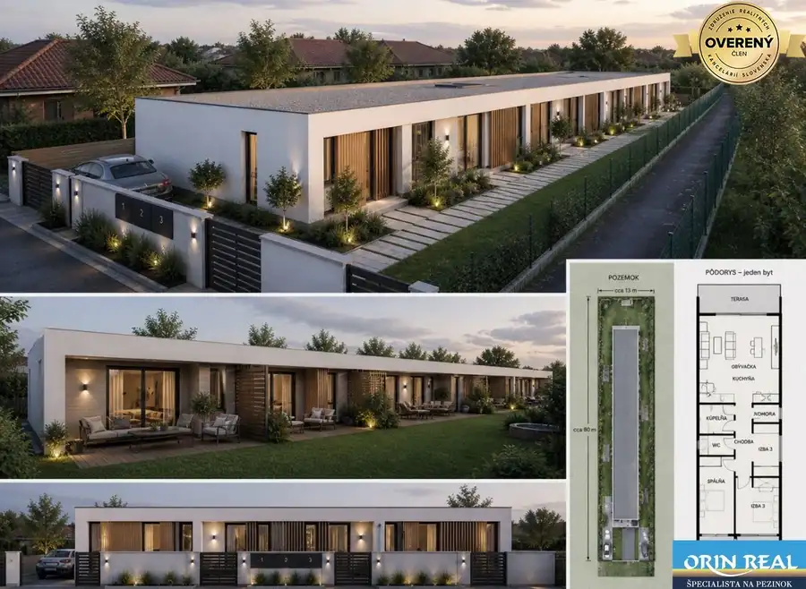
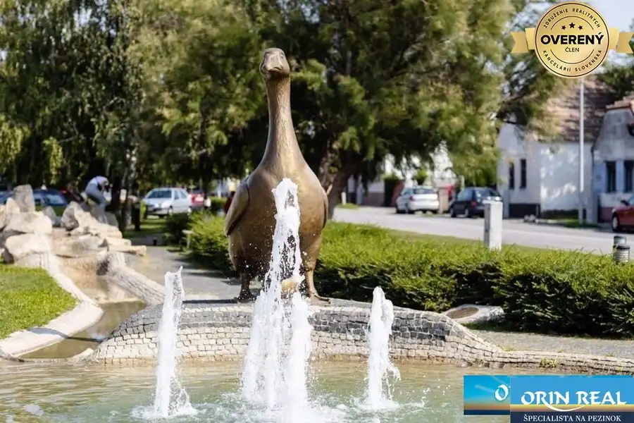
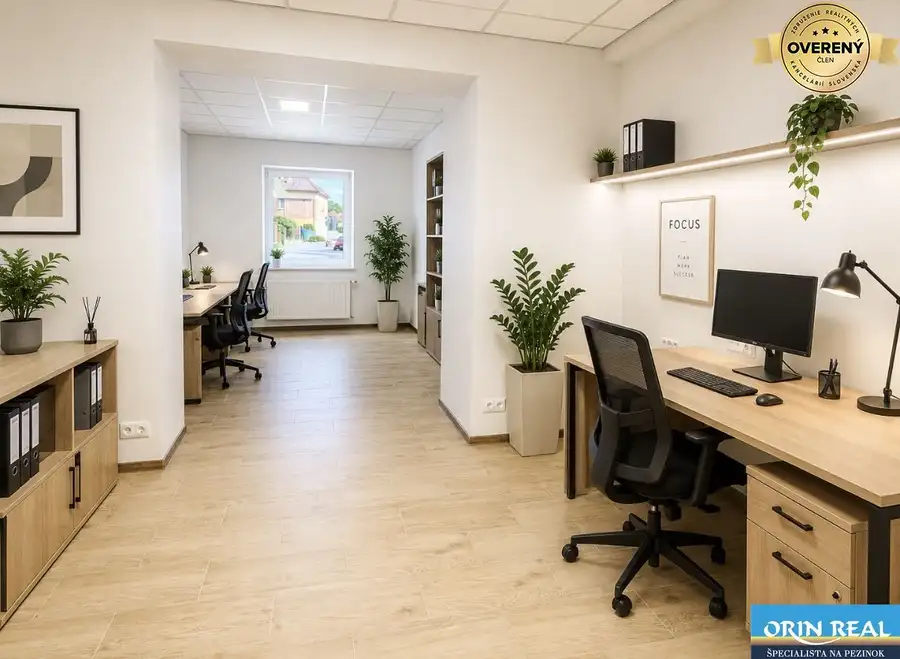
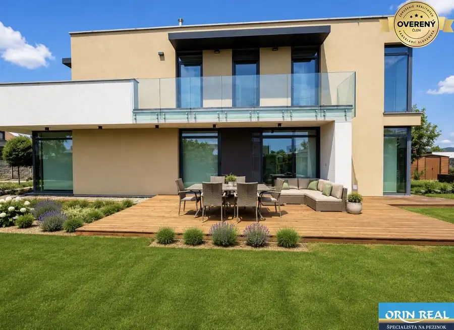
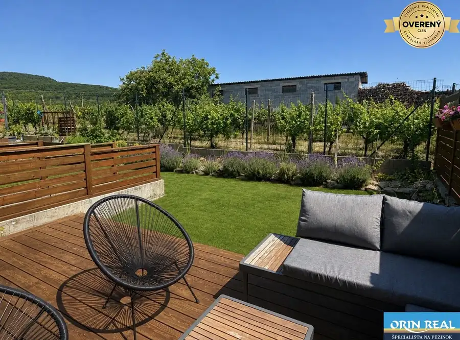
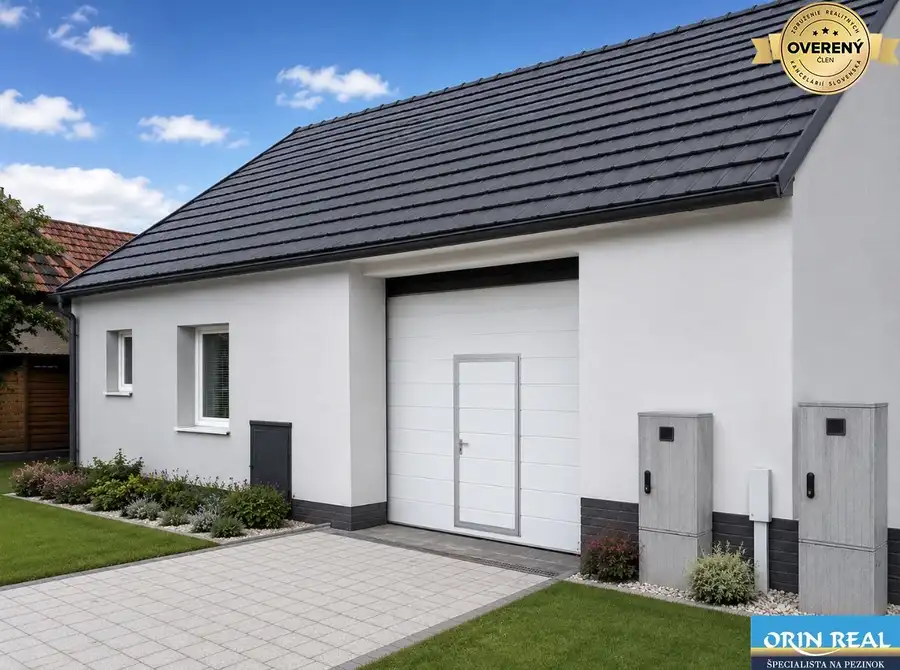
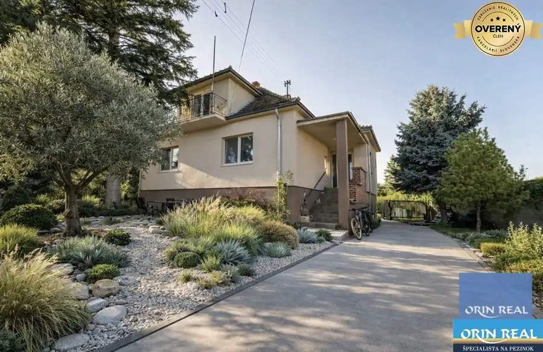
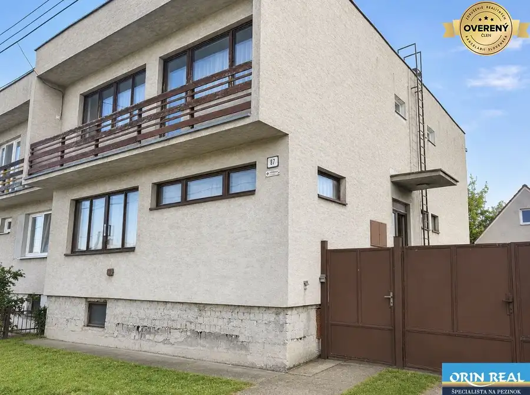
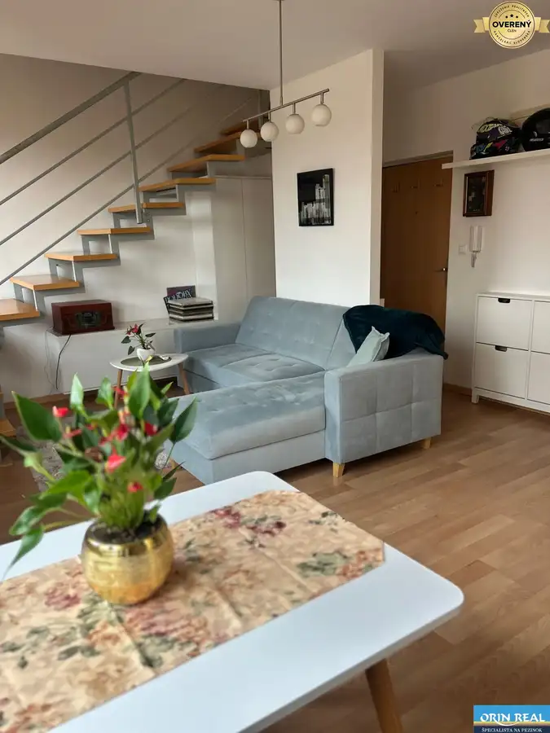
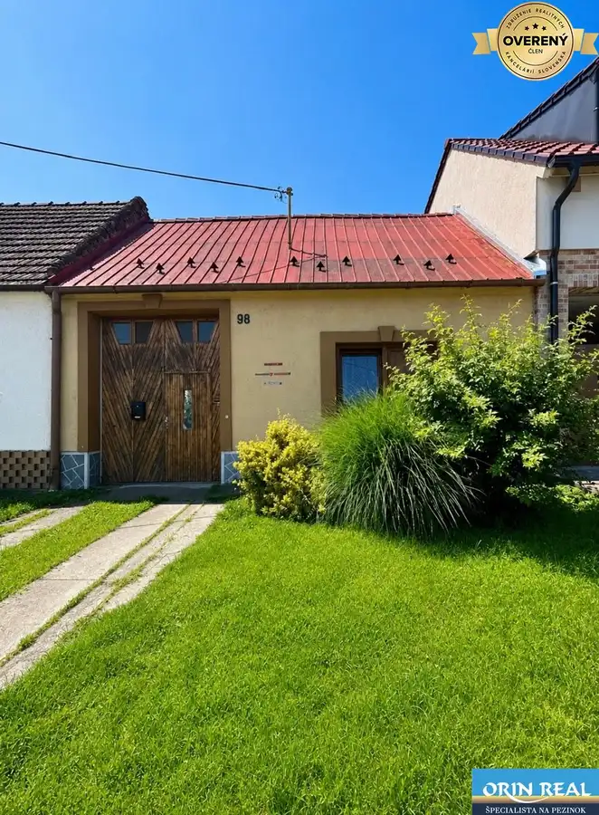

Aktuálna ponuka
Nehnuteľnosti, ktoré ponúkam
10 nehnuteľností na predaj a prenájom. Vyberte typ, alebo napíšte lokalitu.
10 z 10

PozemokNové 249 000 €Pozemok vhodný na veľký RD Chorvátsky Grob 1.044m2 Chorvátsky Grob 1044 m²
PozemokNové 144 000 €Stavebný pozemok na RD Slovenský Grob - Orechová 631m2 Slovenský Grob 631 m²
Nebytové priestoryNové 1 200 €Na prenájom obchodný priestor v centre Pezinka 100m2 Pezinok 100 m²
Rodinné domy 790 000 €Jedinečný moderný Rodinný dom Čierna Voda-Chorvátsky Grob 887m2 Chorvátsky Grob 5-izbový270 m²
Rodinné domy 377 000 €Nádherný 4izbový dom Novostavba v obci Dubová 196m2 - pivnica Dubová 4-izbový196 m²
Rodinné domy 210 000 €Častá RD s čiastočnou rekonštrukciou a veľkým pozemkom 2934m2 Častá 4-izbový235 m²
Rodinné domy 460 000 €ZĽAVA!!!Na predaj rodinný dom s rozľahlým pozemkom 1788m2 MODRA Modra 4-izbový110 m²
Rodinné domy 180 000 €Priestranný 5izbový RD v Dolných Orešanoch 733m2 Dolné Orešany 5-izbový200 m²
Byt 790,- €REZERVOVANÝ!Krásny zariadený 3izbový mezonet len na skok od centra Senec 3-izbový56 m²4. podlažie
Rodinné domy 160 000 €Na predaj starší rodinný dom v obci Budmerice 541m2 Budmerice 6-izbový200 m²Tomuto výberu zatiaľ nezodpovedá žiadna ponuka. Napíšte mi, čo hľadáte.